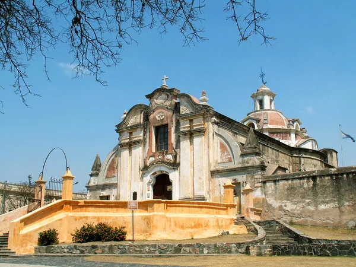
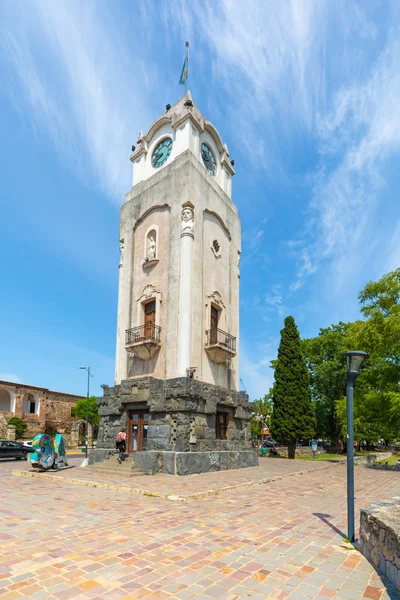

LA CIUDAD HOY EN DIA



Don Juan Nieto, colaborador en la fundación de la Ciudad de Córdoba
de la Nueva Andalucía, adquiere, en 1588, tierras en la zona de lo
que hoy es Paravachasca. Allí levanta casas, ranchos y corrales de
piedra, nombrando a la estancia Potrero de San Ignacio de Manresa.
Por el año 1609, su viuda se casa con Don Alonso Nieto de Herrera
quien, tiempo después, se convierte en el único heredero. Es él
quien bautiza las tierras en recuerdo a un Santuario de
Algarrovillas de Alconetar, en culto a la Virgen de Alta Gracia, que
pasó a formar parte de la Compañía de Jesús, donando todos sus
bienes a la misma en el año 1643.
Al ser expulsados en 1767, sus bienes pasan a ser administrados por
una Junta de Temporalidades. Los esclavos son llevados a Córdoba y
la Estancia de Alta Gracia queda prácticamente abandonada.
Pasó por muchas manos, hasta que en 1810, Victorino Rodríguez se la
vende al Ex Virrey Don Santiago de Liniers y Remond. Al ser
ejecutado su dueño, se convierte en patrimonio de los herederos del
Virrey, quienes no pueden atenderla, entonces se la adjudica a Don
José Manuel Solares quién, en su testamento, afirma la voluntad de
crear una Villa.
El Gobierno Provincial crea el Municipio, el 14 de Enero de 1900. El
28 de Junio de 1940, por Ley 3849 y al alcanzar los 10.000
habitantes, Alta Gracia se convierte legalmente en Ciudad.
El progreso llega a la Estancia junto con los Jesuitas, quienes
construyen un tajamar. El 2 de diciembre de 2000, sus obras
arquitectónicas fueron declaradas Patrimonio Histórico - Cultural de
la Humanidad por la UNESCO.